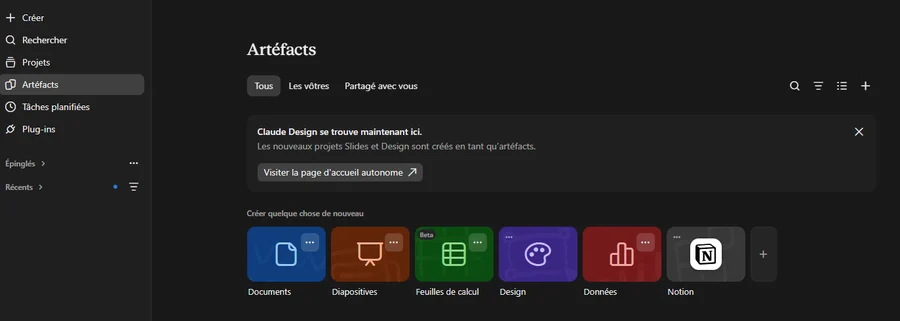
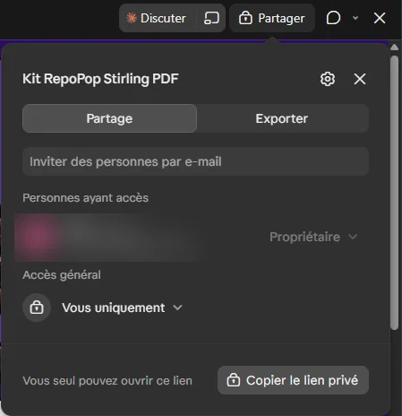

1
Ouvrir les artefacts
Menu de gauche › Artéfacts
Clique sur Artéfacts dans le menu de gauche : tu retrouves tout ce que tu as fabriqué, et des modèles pour en commencer un.

Un doc, des slides, un design ou une mini-appli, prêts à montrer : Claude les fabrique à côté de la conversation, et tu les retouches toi-même.

Un artefact, c'est tout ce que Claude fabrique pour toi et que tu montrerais à quelqu'un : un doc, une présentation, une maquette, un tableau de bord ou une mini-appli. Il s'ouvre dans une fenêtre à côté de la conversation, et il est rangé dans l'onglet Artefacts du menu de gauche pour le retrouver depuis n'importe quelle conversation.
Docs, Slides et Design dès l'offre gratuite ; Data (tableaux de bord), Sheets et Whiteboards (bêta) dès l'offre Pro ; Motion (animations, bêta) en Team et Enterprise.
Docs, Slides, Design : gratuitTu tapes directement dans un doc, tu modifies une diapo, tu déplaces un élément d'une maquette… ou tu demandes la modification à Claude.
Modification directeExport Word, PDF, Markdown ou Google Docs pour un doc, PowerPoint, PDF ou Google Slides pour une présentation. Partage par lien dès l'offre Pro.
Lien : Pro et +Dans Claude sur le web ou l'appli de bureau (sur mobile, tu peux créer et voir tes artefacts, mais pas régler le partage).
Clique sur Artéfacts dans le menu de gauche : tu retrouves tout ce que tu as fabriqué, et des modèles pour en commencer un.

Sous « Créer quelque chose de nouveau », choisis Diapositives (ou Documents, Design…), puis décris ce que tu veux. Tu peux aussi le demander dans n'importe quelle conversation : « Fais-moi 5 slides sur mon projet ».
Ouvre l'artefact, clique sur Partager en haut à droite, règle l'Accès général (au départ : « Vous uniquement »), puis Copier le lien. L'onglet Exporter de la même fenêtre donne le fichier (PowerPoint, PDF…).

« Fais-moi 6 slides sur l'avancement du projet, à partir de ces notes. » Puis export PowerPoint.
« Transforme ce compte rendu en doc propre, avec les décisions et les actions. » Un lien, et c'est envoyé.
« Dessine l'écran d'accueil de mon appli de recettes, 3 versions. » Tu déplaces les éléments toi-même.
« Fais-moi un calculateur de budget vacances. » Il tourne directement dans l'artefact.
« Fais un tableau de bord de mes ventes avec ce fichier. » (modèle Data, dès l'offre Pro)
Les grandes IA savent toutes afficher ce qu'elles fabriquent à côté du chat, mais pas de la même façon.
Bon pour : des docs, slides et maquettes modifiables, rangés dans un onglet, exportables en Word, PowerPoint ou PDF.
Bon pour : rédiger et créer de petites applis, avec un lien public en un clic.
Bon pour : voir une page HTML, un graphique ou un diagramme directement dans la réponse ; Canvas n'est plus proposé sur les modèles récents depuis le 28/05/2026.

Chaque vidéo RepoPop Décode t'explique un sujet IA ou tech en moins d'une minute, avec sa fiche complète comme celle-ci.